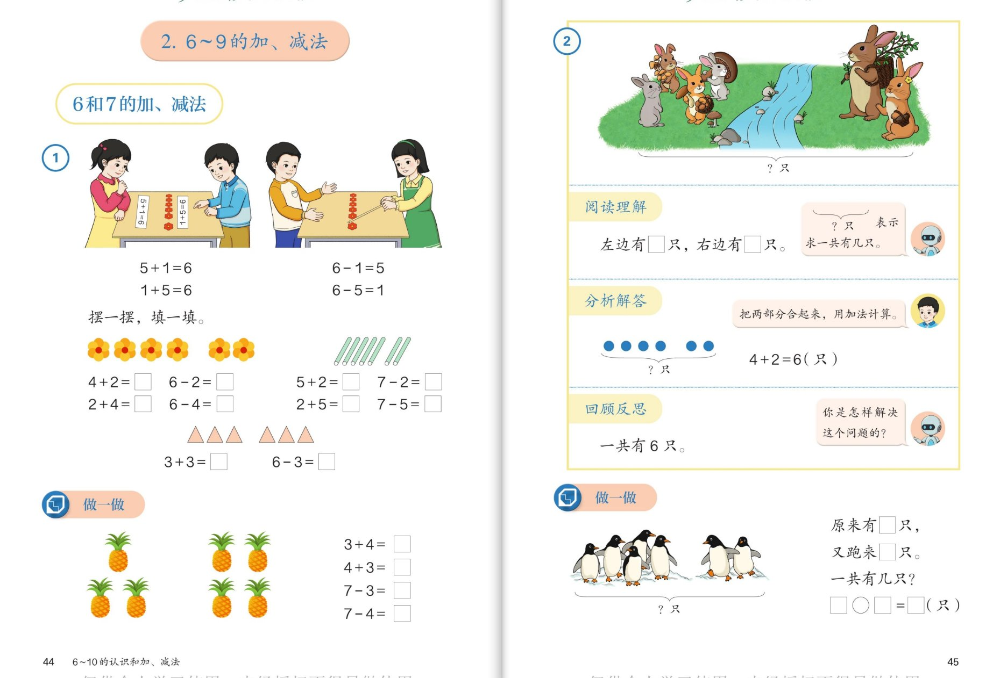
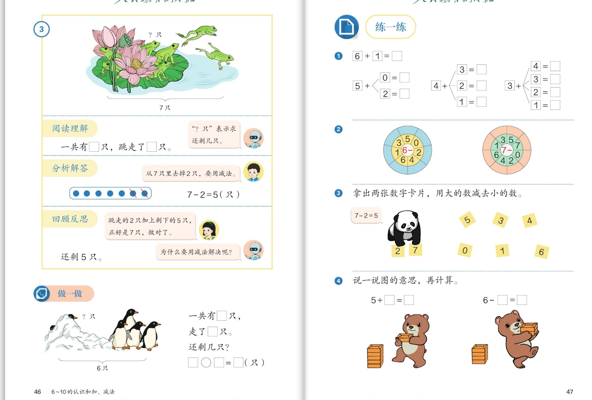
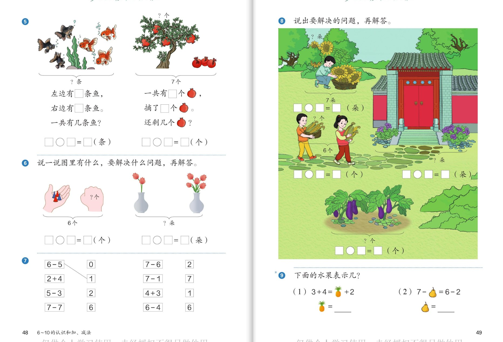
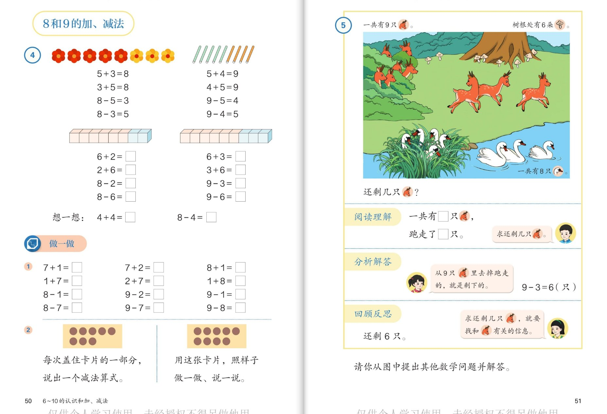
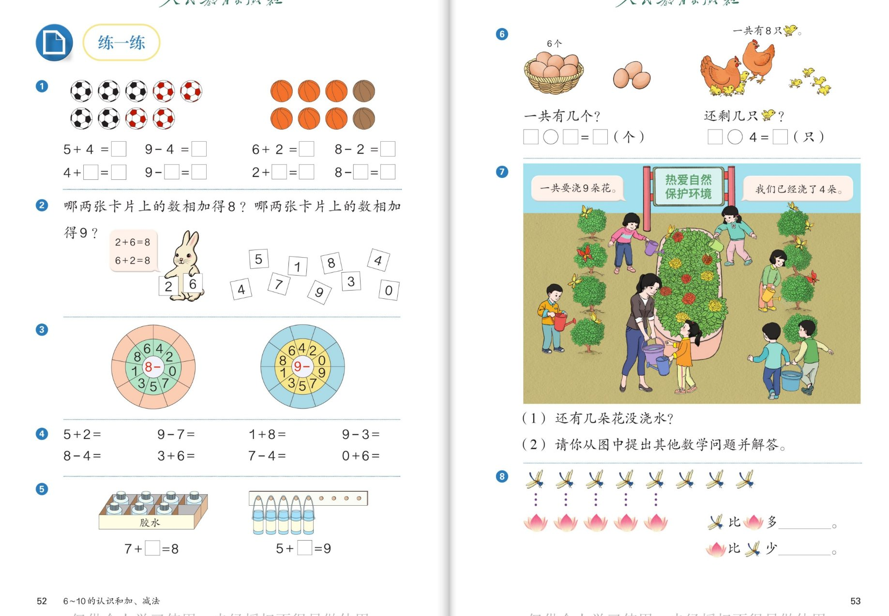

🧠 认知层 · 看懂图意、会列式
💪 强化层 · 会口算、会用分与合想
🚀 拓展层 · 会解决问题、敢挑战
👨👩👧 使用建议：每组内容配 6 个问题，按"认知 → 强化 → 拓展"三层递进。
这几页最重要的新本领是教材里的三步解题法：阅读理解（知道了什么）→ 分析解答（怎样列式）→ 回顾反思（做得对吗）。
做题时让孩子把三步说出来，比算对更重要。点击问题卡片展开参考答案。
1
🍓 6 和 7 的加、减法（第44～45页）
一图四式 · 试一试三步法

📖 课本第 44～45 页 · 6 和 7 的加、减法 / 试一试 / 做一做
🧠 认知层看图列式，认识"一图四式"
🔴
认知 1：图①小朋友摆圆片：5 个红花片加 1 个粉花片。为什么能写出 5+1=6 和 1+5=6 两个加法算式？6−1=5、6−5=1 又是怎么来的？
看答案
参考答案：
- 5 和 1 合起来是 6；交换位置，1 和 5 合起来还是 6——两个数交换位置，得数不变；
- 从总数 6 里去掉 1 个粉花片剩 5 个红花片：6−1=5；去掉 5 个红花片剩 1 个：6−5=1。
💡 一幅图能写出两加两减四个算式，这就是"一图四式"，因为 5、1、6 是一家人！
🌻
认知 2：摆一摆，填一填：4+2=□、2+4=□、6−2=□、6−4=□。算的时候可以想什么？
看答案
参考答案：
- 4+2=6；2+4=6；6−2=4；6−4=2；
- 可以摆小棒，也可以想分与合："4 和 2 组成 6""6 可以分成 2 和 4"。
💪 强化层算得熟，说得清
🍍
强化 1：做一做菠萝图：3+4、4+3、7−3、7−4。算完这四个算式，你发现了什么？
看答案
参考答案：
- 3+4=7；4+3=7；7−3=4；7−4=3；
- 发现：3、4、7 是一家人——加法的两个算式和减法的两个算式正好反过来（一图四式）。
🐰
强化 2：试一试兔子图：按"阅读理解 → 分析解答 → 回顾反思"三步，把这道题完整说一遍。"?"符号表示什么？
看答案
参考答案（三步说完整）：
- 阅读理解：左边有 4 只兔，右边有 2 只兔，"?"表示求一共有几只；
- 分析解答：把两部分合起来，用加法算：4+2=6（只）；
- 回顾反思：跑来的 2 只加上原来的 4 只，正好是 6 只，做对了！
💡 "?"是大括号下的问题记号：问"一共多少"就找两个部分合起来。
🚀 拓展层找联系、编题目
🔺
拓展 1：书上还有 3+3=□ 和 6−3=□。这两个算式为什么每个数字都一样？
看答案
参考答案：
- 3+3=6；6−3=3；
- 因为两部分同样多（都是 3），所以加起来是 6，从 6 里去掉一半 3，剩下的还是 3——四个算式里数字都一样！
💡 这是"双数"的特殊本领：两部分同样多时，一图四式变得更特别。
🐧
拓展 2（小小挑战）：做一做企鹅图："原来有 □ 只，又跑来 □ 只，一共有几只？"先填空，再列式 □○□=□（只），并说说为什么用加法。
看答案
参考答案：
- 原来有 5 只，又跑来 2 只（以图上点数为准）；
- 5 + 2 = 7（只）；
- 因为是把两部分合起来求一共，所以用加法。
🌈 说清楚"原来……又……一共……"，列式就不容易错。
2
🐸 7 的减法（三步法）· 练一练（第46～47页）
用减法解决问题 · 转盘口算

📖 课本第 46～47 页 · 用减法解决问题 / 练一练
🧠 认知层为什么用减法？
🐸
认知 1：青蛙图：一共有 7 只，跳走了 2 只，还剩几只？书上为什么要用减法算？三步说一说。
看答案
参考答案（三步）：
- 阅读理解：一共有 7 只，跳走了 2 只，求还剩几只；
- 分析解答：从 7 只里去掉 2 只，要用减法：7−2=5（只）；
- 回顾反思：跳走的 2 只加上剩下的 5 只，正好是 7 只，做对了！
💡 书上问"为什么要用减法解决？"——因为是从总数里去掉一部分，去掉就用减。
🐧
认知 2：做一做企鹅图：一共有 □ 只，走了 □ 只，还剩几只？列式 □○□=□（只）。
看答案
参考答案：
- 一共有 6 只，走了 4 只（以图上点数为准）；
- 6 − 4 = 2（只）。
💪 强化层口算过关、找得数规律
⏱️
强化 1：练一练第①题：6+1、5+0、5+1、5+2、4+1、4+2、4+3、3+1、3+2、3+3、3+4。算一算，这些得数有什么有趣的规律？
看答案
参考答案：
- 6+1=7；5+0=5、5+1=6、5+2=7；4+1=5、4+2=6、4+3=7；3+1=4、3+2=5、3+3=6、3+4=7；
- 规律：每一组里第一个加数每次少 1，第二个加数每次多 1，得数不变（或每次多 1）。
🎡
强化 2：转盘游戏：中间是"6−"和"7−"，用中间的数减外圈的每个数。怎样转得又对又快？
看答案
参考答案（方法）：
- 6−3=3、6−1=5、6−2=4、6−4=2、6−0=6……7−3=4、7−2=5、7−6=1、7−4=3……
- 快招：想分与合——"6 可以分成 3 和 3"，所以 6−3=3，不用一个一个去数。
🚀 拓展层玩游戏、看图编题
🐼
拓展 1：熊猫玩卡片：拿出两张数字卡片，用大的数减去小的数（如 7−2=5）。和小伙伴玩一玩：哪些卡片配在一起算式最大？
看答案
参考答案：
- 示例：7−2=5；用 7 和 0 这两张：7−0=7（最大）；
- 发现：大的数相同，减去的数越小，得数越大；用最大的 7 减最小的 0，差最大。
🌈 玩中能发现规律，就是会思考！
🐻
拓展 2（小小挑战）：小熊搬箱子：先说一说图的意思，再计算 5+□=□、6−□=□。
看答案
参考答案：
- 图意：地上有 5 个箱子（或若干），小熊又抱来一些，求一共；搬走一些求还剩；
- 5+2=7；6−1=5（按图上实际数量列式为准）；
- 关键：先说清"原来有多少、又怎样了"，再决定用 + 还是 −。
3
🐟 练一练 · 看图列式 · 思考题（第48～49页）
说图意 · 列算式 · 连线 · 水果谜题

📖 课本第 48～49 页 · 练一练（第 5～9 题）
🧠 认知层说图意，列对算式
🐠
认知 1：第⑤题金鱼图：左边有 □ 条鱼，右边有 □ 条鱼，一共有几条鱼？列式 □○□=□（条）。
看答案
参考答案：
- 左边有 6 条，右边有 1 条（以图上点数为准）；
- 6 + 1 = 7（条）；求一共，用加法。
🍎
认知 2：第⑤题石榴图：一共有 □ 个石榴，摘了 □ 个，还剩几个？列式 □○□=□（个）。
看答案
参考答案：
- 一共有 7 个，摘了 2 个（以图上点数为准）；
- 7 − 2 = 5（个）；从总数里去掉，用减法。
💪 强化层说图意、连一连
🧤
强化 1：第⑥题：两只手套合起来 6 个，另一只手遮住了几个？两个花瓶一瓶有花、一瓶遮住，一共几朵？说一说图意，再列式。
看答案
参考答案：
- 手套：一共有 6 个，看得见 4 个，遮住 2 个：6 − 4 = 2（个）或 4 + □ = 6；
- 花瓶：一个瓶里 2 朵，另一瓶 4 朵，一共：2 + 4 = 6（朵）（以图上点数为准）。
🌈 遮住部分的问题，用"想组成"最容易：几和 4 组成 6？
🔗
强化 2：第⑦题连一连：6−5、2+4、5−3、7−7、7−6、7−1、4+3、6−4 分别连到哪个答案？
看答案
参考答案：
- 6−5=1；2+4=6；5−3=2；7−7=0；
- 7−6=1；7−1=6；4+3=7；6−4=2。
💡 先算出每个算式的得数，再去找相同的数字——心算过关就不用来回找！
🚀 拓展层提问题、解谜题
🏡
拓展 1：第⑧题农家小院：图里藏着好几个数学问题（向日葵 7 朵、玉米 6 个、茄子、南瓜……）。说出一个要解决的问题并解答。
看答案
参考示例：
- "篮子里原有 7 朵向日葵，送给别人一些后还剩 □ 朵？"（按图：7−1=6 朵之类）；
- "篮子里 1 个玉米加手里 6 个玉米，一共有几个？"（1+6=7 个之类，以图上点数为准）；
- 关键：先看清图上已知的两个数和要问的"？"在哪。
🍍
拓展 2（思考题）：下面的水果表示几？（1）3+4=🍍+2 （2）7−🍐=6−2。🍍 和 🍐 各是几？说说你是怎么想的。
看答案
参考答案：
- （1）3+4=7，所以 🍍+2 也要等于 7，🍍=5；
- （2）6−2=4，也就是 7−🍐=4，所以 🍐=3；
- 思路：先算会算的一边，再想"几和几"能凑成（或减出）同样的得数。
💡 这就是"等式两边一样多"的第一课——天平两边要平衡！
4
🌸 8 和 9 的加、减法（第50～51页）
一图四式 · 解决问题 · 提问题

📖 课本第 50～51 页 · 8 和 9 的加、减法 / 解决问题
🧠 认知层一图四式升级版
🌺
认知 1：5 朵红花和 3 朵黄花：5+3=8、3+5=8、8−5=3、8−3=5。为什么一幅图能写出四个算式？
看答案
参考答案：
- 两部分合起来用加法：5+3=8、3+5=8（交换位置得数不变）；
- 从总数 8 里去掉一部分用减法：8−5=3、8−3=5；
- 因为 5、3、8 是一家人（5 和 3 组成 8），所以能写四个。
🤔
认知 2：想一想：4+4=□、8−4=□。为什么这次每幅图只能写出一个算式？
看答案
参考答案：
- 4+4=8；8−4=4；
- 因为两部分同样多（都是 4）：交换位置还是 4+4；去掉 4 剩下的还是 4——写不出不一样的算式，所以只有两个（书上只各出一个）。
💡 "两部分同样多"是一图四式的特殊情况，记住这个发现！
💪 强化层口算熟、卡片游戏会变式
⏱️
强化 1：做一做第①题：7+1、1+7、8−1、8−7；7+2、2+7、9−2、9−7；8+1、1+8、9−1、9−8。算一算，每一组四个算式有什么关系？
看答案
参考答案：
- 7+1=8；1+7=8；8−1=7；8−7=1；
- 7+2=9；2+7=9；9−2=7；9−7=2；
- 8+1=9；1+8=9；9−1=8；9−8=1；
- 关系：同一组的三个数是一家人——两加两减，正好反过来。
🃏
强化 2：做一做第②题：8 朵花的卡片，每次盖住一部分，说出一个减法算式。盖住 3 朵怎么说？还能说出哪些？
看答案
参考答案：
- 盖住 3 朵：8−3=5；盖住 5 朵：8−5=3；
- 还能盖 1 朵：8−1=7；盖 2 朵：8−2=6；盖 4 朵：8−4=4……
🌈 "盖住几个"就是"去掉几个"——盖卡片把减法变成好玩的游戏！
🚀 拓展层三步法解决问题、自己提问题
🦌
拓展 1：小鹿图：按"阅读理解 → 分析解答 → 回顾反思"三步，解决"还剩几只🦌"（一共有 9 只，跑走了 3 只）。
看答案
参考答案（三步）：
- 阅读理解：一共有 9 只小鹿，跑走了 3 只，求还剩几只；
- 分析解答：从 9 只里去掉跑走的 3 只，用减法：9−3=6（只）；
- 回顾反思：跑走的 3 只加上剩下的 6 只，正好 9 只，做对了！书上提醒：求还剩几只，要找和"跑走"有关的信息。
🦢
拓展 2（小小挑战）：天鹅图：一共有 8 只天鹅，有的在水里、有的在飞。请你从图中提出其他数学问题并解答。
看答案
参考示例（以图上点数为准）：
- "水里游的有 6 只，天上有 2 只，一共有几只？"（6+2=8）
- "一共有 8 只，天上飞着 2 只，水里游的有几只？"（8−2=6）
- "水里的比天上的多几只？"（6−2=4）
🌟 一幅图能提出加法问题、减法问题、比多少问题——会提问题才是真本事！
5
🐔 练一练（第52～53页）
口算 · 卡片 · 浇花问题 · 比多少

📖 课本第 52～53 页 · 练一练
🧠 认知层看图算、接着算
⚽
认知 1：第①题球图：5 个足球加 4 个篮球。算一算：5+4=□、9−4=□，再接着填：4+□=9、9−□=□、2+□=□、8−□=□。
看答案
参考答案：
- 5+4=9；9−4=5；4+5=9；9−5=4；
- 2+6=8（第③幅篮球图 6+2=8 之类）；8−2=6（以图上点数为准）。
🌈 都可以想"分与合"：几和几组成 9、8 可以分成几和几。
⏱️
认知 2：第④题口算：5+2、9−7、1+8、9−3、8−4、3+6、7−4、0+6。
看答案
参考答案：
- 5+2=7；9−7=2；1+8=9；9−3=6；
- 8−4=4；3+6=9；7−4=3；0+6=6。
💪 强化层凑数游戏、看图补条件
🎴
强化 1：第②题：哪两张卡片上的数相加得 8？哪两张相加得 9？（卡片有 0~9）怎样找才不漏？
看答案
参考答案：
- 得 8 的：1+7、2+6、3+5、4+4（还有 8+0）；
- 得 9 的：0+9、1+8、2+7、3+6、4+5；
- 方法：按顺序"从 0 开始配"——想 8 可以分成几和几、9 可以分成几和几，一对一对找。
🧴
强化 2：第⑤⑥题：胶水图 7+□=8；牛奶图 5+□=9；鸡蛋图一共有几个？母鸡图 □○4=□（只）。
看答案
参考答案：
- 7+1=8（盒里 7 瓶，外面 1 瓶）；
- 5+4=9；
- 鸡蛋：6+2=8（个），篮里 6 个加篮外 2 个；
- 母鸡：8−4=4（只），一共有 8 只鸡，走了（或在别处的）4 只，还剩 4 只（以图上点数为准）。
💡 求一共用加法，求还剩（或部分）用减法——先想清楚问的是什么！
🚀 拓展层解决问题、比多少
💧
拓展 1：第⑦题浇花："一共要浇 9 朵花，我们已经浇了 4 朵。"还有几朵花没浇水？（2）请你再提出其他数学问题并解答。
看答案
参考答案：
- 9−4=5（朵），还有 5 朵没浇水；
- 自己提问题示例："浇了的比没浇的少几朵？"（5−4=1）"拿水壶的有几个人？"
🪷
拓展 2（小小挑战）：第⑧题：蜻蜓和荷花一一对应着比：蜻蜓比荷花多____，荷花比蜻蜓少____。你是用什么方法比的？
看答案
参考答案：
- 图上蜻蜓 8 只、荷花 6 朵（以实际点数为准）：蜻蜓比荷花多 2 只，荷花比蜻蜓少 2 朵；
- 方法一：一一对应——一只蜻蜓对一朵荷花，多出来的就是差；
- 方法二：数一数再算：8−6=2。
💡 数一数再算一算，两种方法结果一样——图上点过虚线的正是"对应"的样子！